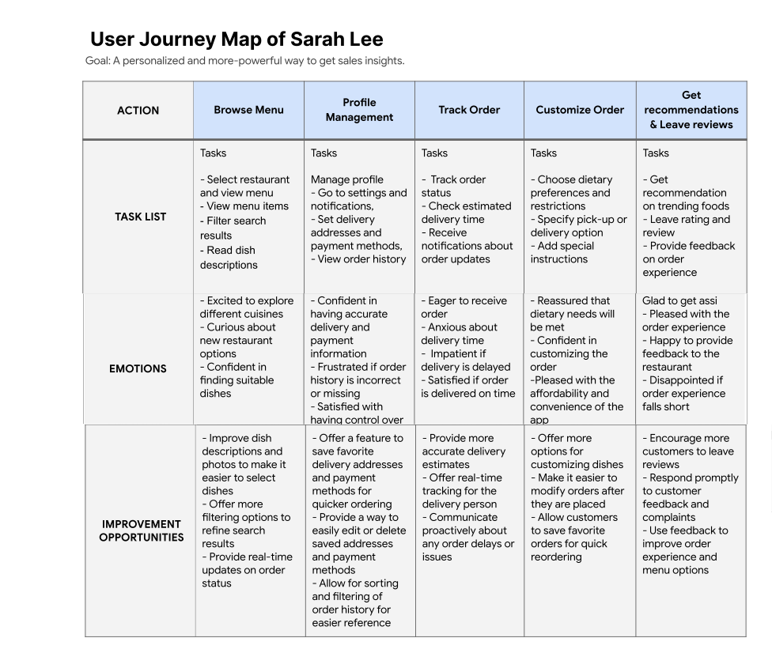

User
Personas
High
Fidelity Wireframes


Category Mobile DesignUI/UX Case Study
Project Overview
The Mindful Pause app is designed to provide users with a quick and easy way to practice mindfulness and meditation during work breaks. With a variety of themes and durations to choose from, the app guides users through short exercises using audio guidance and visual cues to help them focus on the present moment. By incorporating mindfulness into their daily routine, users can reduce stress and increase their overall well-being, even during a busy workday.Users can effectively manage stress and enhance their overall well-being by incorporating regular mindfulness practices into their workday. The Mindful Pause app empowers individuals to take proactive steps towards self-care, even in the midst of a busy schedule. With its emphasis on brief yet impactful sessions, the app recognizes the importance of making mindfulness easily achievable within the context of work breaks. Whether it's a few moments of deep breathing, a guided visualization, or a brief meditation session, the Mindful Pause app provides a valuable tool for individuals seeking to cultivate mindfulness and enhance their mental and emotional state throughout the workday. By dedicating intentional moments to self-reflection and relaxation, users can experience the benefits of increased focus, reduced stress, and improved overall work-life balance. Take a moment to pause, recharge, and prioritize your well-being with the Mindful Pause app. Embrace the transformative power of mindfulness and discover how it can positively impact your work experience and overall quality of

Tagline for the project:
"Take a breath. Take a mindful pause.”
Problem Statement:
In today's fast-paced work environment, individuals often find it challenging to carve out moments of mindfulness and relaxation amidst their busy schedules. The absence of intentional breaks and opportunities for self-care can lead to increased stress levels, decreased focus, and overall diminished well-being. The lack of accessible tools and guidance specifically tailored to support mindfulness during work breaks further exacerbates this issue. Moreover, the demands of work can easily consume individuals' attention, leaving little room for intentional pauses and self-reflection. Without dedicated moments for mindfulness and meditation, individuals may struggle to effectively manage their stress levels and maintain a healthy work-life balance. The existing solutions in the market often focus on either comprehensive meditation programs that require substantial time commitment or general-purpose mindfulness apps that do not cater specifically to the unique context of work breaks. This gap in the market calls for a solution that addresses the need for quick and effective mindfulness practices during work breaks, promoting well-being and enhanced productivity. Therefore, the problem at hand is to provide users with a user-friendly and accessible app that offers guided mindfulness and meditation exercises tailored to fit within the constraints of work breaks. This solution aims to empower individuals to integrate mindfulness practices seamlessly into their daily routines, fostering a sense of calm, focus, and overall well-being even during their busiest workdays.
Challenges:
- Restaurant partnerships: One of the biggest challenges will be to establish partnerships with local restaurants and caterers in the areas where the app is offered. FamDinn will need to convince restaurants and caterers to join the platform, which can be challenging given the existing competition in the market.
- Coordinating orders: Coordinating orders from multiple restaurants and caterers can be a complex process, particularly during peak times. FamDinn will need to develop an efficient order management system to ensure timely and accurate deliveries to customers.
- Payment and billing: FamDinn will need to develop a secure and user-friendly payment and billing system that can accommodate multiple transactions from different restaurants and caterers. This will require integrating various payment gateways and ensuring that transactions are transparent and accurate.
- User engagement: FamDinn will need to ensure that the app is user-friendly and engaging, particularly for younger users who may not be accustomed to ordering food online. This may require developing gamification features, offering discounts and rewards, and implementing a customer feedback system to improve user satisfaction.
- Scaling and expansion: As the app grows in popularity, FamDinn will need to scale up its infrastructure and operational capacity to handle increasing orders and users. This will require developing partnerships with more restaurants and caterers, expanding the delivery network, and ensuring that the platform can handle large volumes of transactions and data.

Design Process:
- 💡By using Design thinking, we can empathize with our users, define the problem, ideate potential solutions, prototype, and test to create an app that meets the needs of busy families looking to plan and organize weekly dinners more efficiently.
- 💡Following a user-centered approach that puts the needs of our users first, we can use Design thinking to create a FamDinn app that is intuitive, easy to use, and addresses the specific pain points and challenges faced by families when it comes to planning meals.


Competitive Analysis:
In order to gain a better understanding of how our competitors are performing in the market and to establish a strong foundation for our own business, I conducted an analysis of both direct and indirect competitors.Based on our competitive analysis, here are the main findings regarding FamDinn's competitors:
- None of our competitors have an interest-picking option for kids or parents during the onboarding process.
- Only one of our competitors offers offline content, which could be a unique selling point for FamDinn.
- Two of our competitors have a progress tracker, but the capabilities are limited and could be improved upon by FamDinn.
- Our competitors' pricing models range from a monthly subscription fee to a commission-based fee on orders, which suggests that there is flexibility in the market for FamDinn to find a pricing strategy that works best for its target audience.
- We found that some of our competitors have limited food options and lack partnerships with local restaurants and caterers, which could be a competitive advantage for FamDinn.
Overall, these findings suggest that FamDinn has an opportunity to differentiate itself in the market by offering unique features such as offline content and a wider variety of food options from local restaurants and caterers. Additionally, FamDinn can also leverage its pricing strategy to better meet the needs of its target audience.

Define Phase:
Persona 1: Sarah Lee
I created personas, empathy maps, and a customer journey map to gain a better understanding of the user's problems. For more information on the empathy maps and customer journeys, please refer to the process deck.
Persona 2: James Smith
During the ideation phase of my UI/UX design project, I explored different concepts and ideas to create an app that solves a common problem for families, students, and friends. I began by conducting user research to understand their pain points and needs, which helped me create a user persona and identify key features for the app. To organize my ideas and plan the app's structure, I created an app map that visualized the information architecture and helped me focus on the user flow. This allowed me to prioritize the most important features and create a seamless user experience.Affinity Diagram:

User Journey Map for Sarah Lee Persona:
